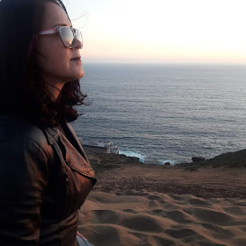

Olho para o futuro com perspectiva de melhora... Hobbies: Viagens, atersanato, leitura e filmes.

Enfermeira biologa de formação, realizado curso de gastronomia para aprimoramento pessoal. Atualmenente tomando gosto por tecnologia e programação, sendo motivo de aprendizado, superação e terapia. Iniciando a aprendizagem nas Elas na Tecg J.A. Brasil. Sou portadora de fibromialgia com grande piora depois da Covid 19. Em tratamento intenso para controle da dor.
Vivendo um dia de cada vez...
"Minha tragetória de vida.
"Gosto de estudar e superar desafios, sou mineira, vovó,"persistente", aprendiz da vida. Estreando a caminhada na área de tecnologia. Produzindo meu primeiro portifólio com trabalho na área, tomando grande gosto por programação e tudo que a tecnologia pode nos proprorcionar. Atuei durante 10 anos como professora, 20 anos na área da enfermagem cuidando e servindo em todos os tipo de doenças. Iniciando agora o outro lado de minha vida: sendo "EU" a "paciente."
A tecnologia chegou em minha vida como terapia, desvendando o mistério por trás da máquina, e vi que o aprendizado me proporcionou desafios que com muito estudo e aperfeiçoamento,estão sendo superarados, começa aqui uma nova etapa, procurando me desenvolver. Já que a síndrome da fibromialgia não tem cura, "apenas tratamento", então superar obstáculos nao é escolha, passou a ser uma necessidade diária.
Cada aprendizado se tornou muito importante, me adaptar a tudo isso e superar obstáculos. Enfim, aprendendo tecnologia e buscando novos desafios.
Assim como o planeta se metamorfoseou pós pandemia, nossa saúde e aperfeiçoamento também, então como diz Elon Musk:
"Eu tenho duas opçôes: assistir a tudo isso acontecendo ou fazer parte disso".